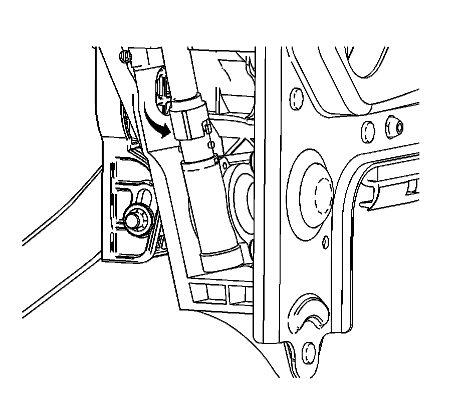
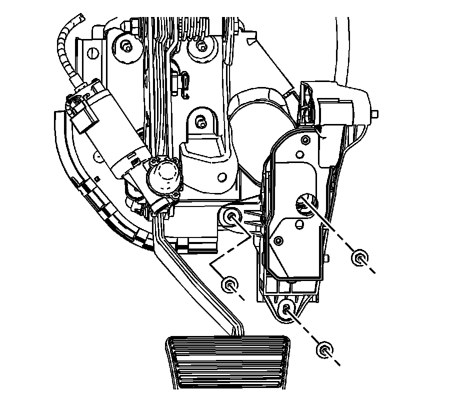
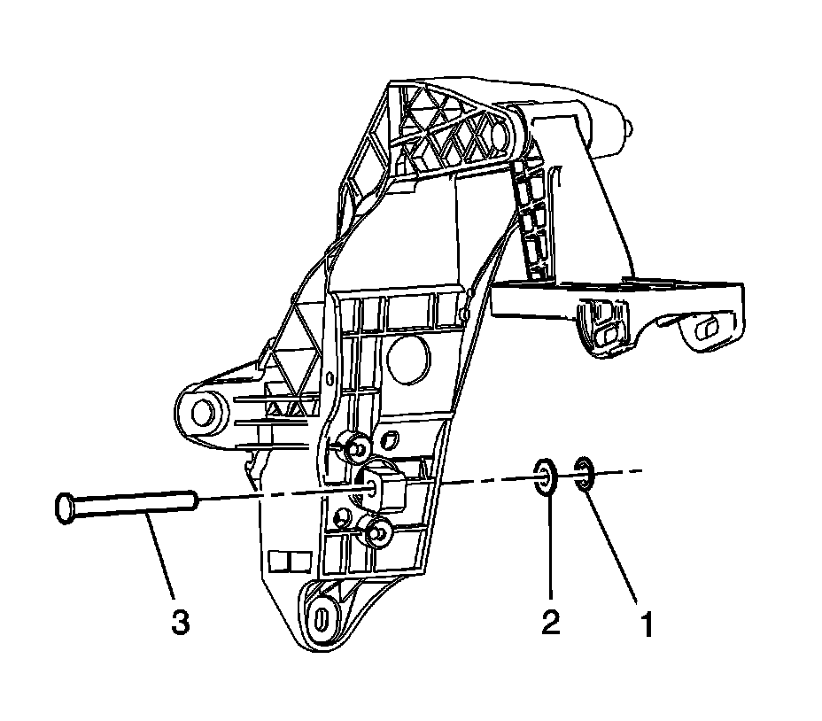
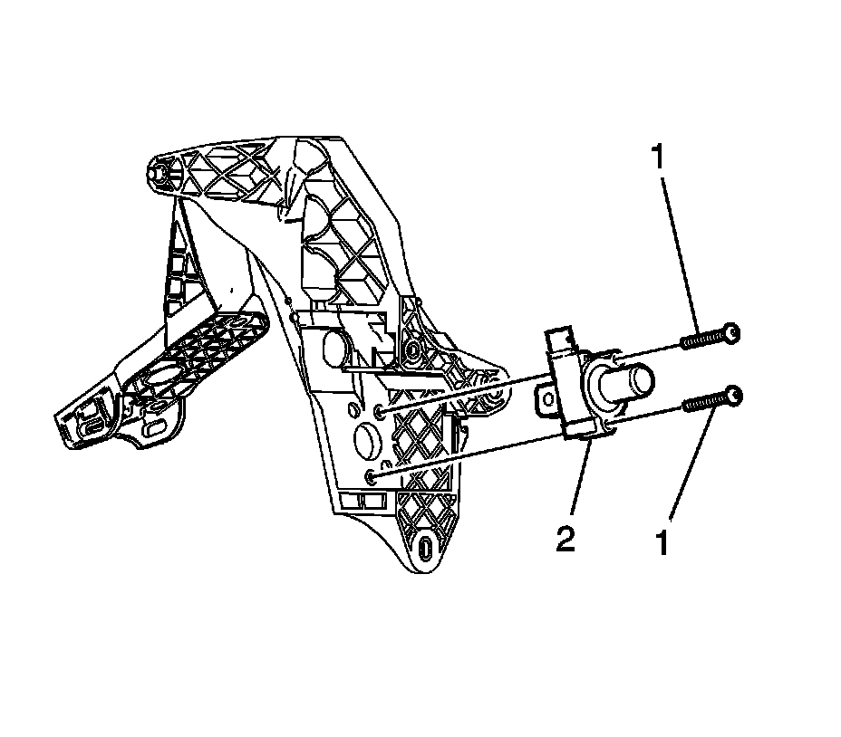
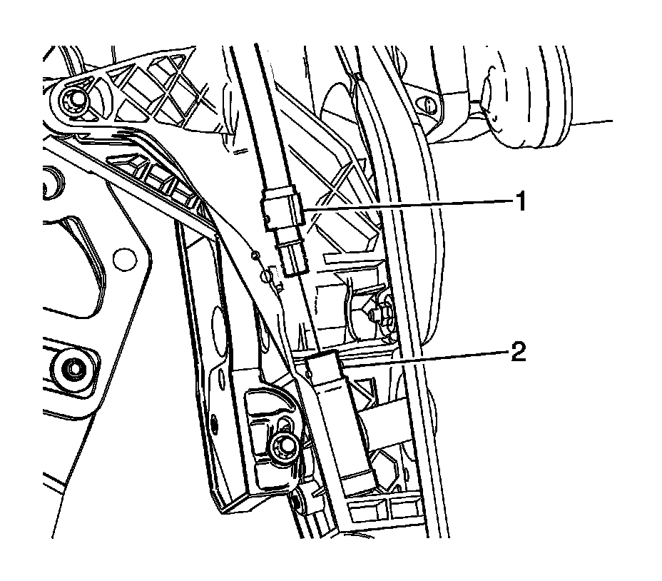

Accelerator Pedal Bracket Replacement
ACCELERATOR PEDAL BRACKET REPLACEMENT
REMOVAL PROCEDURE
1. IMPORTANT: Ensure the brake pedal assembly is adjusted to the lowest position farthest from the drivers seat prior to removal of the accelerator assembly. Failure to do so could result in incorrect step-over height between the brake and accelerator pedals and improper function of the adjustable pedal system.
Remove the driver knee bolster.
2. Remove the accelerator pedal position sensor assembly.
3. Remove the accelerator pedal bracket nuts.

4. Remove the adjustable pedal drive cable from the accelerator pedal actuator using the following procedure:
1. Twist the cable housing counterclockwise.
2. Compress the secondary locking tabs located below the twist and lock tabs with a pointed tool and remove the cable from the pedal actuator.

5. Remove the accelerator pedal bracket nuts from the accelerator pedal bracket.

6. Remove the accelerator actuator lower pivot pin push nut (1) and washer (2).
7. Remove the accelerator actuator lower pivot pin (3).

8. Remove the accelerator actuator mounting screws (1).
9. Remove the accelerator actuator (2).
INSTALLATION PROCEDURE
1. IMPORTANT: Accurate measurement and adjustment during following steps is critical to ensure the proper step-over distance between the brake and accelerator pedals.
Install the accelerator actuator (2) to the accelerator pedal bracket.
2. NOTE: Refer to Fastener Notice.
Install the accelerator actuator screws (1).
Tighten the screws to 2.5 N.m (22 lb in).
3. Install the accelerator actuator lower pivot pin (3).
4. Install the accelerator actuator lower pivot pin washer (2) and push nut (1).In order to allow proper actuation of the adjustable bracket, the push nut must allow some free play of the pivot pin. The distance between the bracket side wall and the push nut should be 1.7 mm (0.07 in).

5. Install the drive cable (1) into the accelerator actuator (2) until secured by the secondary locking tabs.
6. Install and twist the cable housing to secure to the accelerator pedal assembly.
7. Install the accelerator pedal bracket mounting nuts.
Tighten the nuts to 9 N.m (80 lb in).
8. Adjust the accelerator pedal mounting bracket using the following procedure:
1. Remove the screws from the cable housing at the top of the adjustable pedal motor.
2. Twist the cable housing to unlock the cable from the motor.
3. Remove the cable from the adjustable pedal motor.
4. Attach a drill motor or equivalent to the adjustable pedal cable.
5. Spin the cable until there is a distance of 6.14 mm (0.24 in) between the arrows on the inboard side of the adjustable pedal bracket.
9. Install the accelerator pedal position sensor assembly.
10. Install the driver knee bolster.
11. Verify operation of the adjustable pedals.